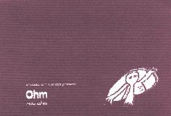

Home Artist links Label link

Ohm - Raw Ohm
| Artist: | Ohm |
| Title: | Raw Ohm |
| Label: | Ohm/Mizmaze/Snowdonia |
| Length(s): | 59 minutes |
| Year(s) of release: | 2001 |
| Month of review: | [02/2002] |
Line up
Nathan Brown - bass, drums
Doug Ferguson - keyboards, electronics, mellotron
Chris Forrest - clarinet, bass clarinet on 2-5
Mason Weisz - guitar on 1-4
Tracks
| 1) | Melodica Festival May '98 Austin TX | 6.36
|
| 2) | Ohm Practice Summer '97 Ft. Worth TX | 14.08
|
| 3) | Club Nowhere 11-29-97 Ft. Worth TX | 9.51
|
| 4) | Club Nowhere 11-29-97 Ft. Worth TX | 12.43
|
| 5) | The Argo 6-26-97 Denton TX | 15.35
|
Summary
Also present on the Floralia compilation volume 3, Ohm is an interesting
experimental/psychedelic outfit from the States. This album is a live
album, but includes editing. The album comes in a large papery cover.
Very artistic.
The music
The five tracks on this album give a good idea of what this band is
about. The first one is typically live: we even hear some of the audience
talking. Strangely enough it does not disturb the tenseness of the music.
That tenseness is certainly there. After hearing tones oscillating for
a while and plenty of zweeps and pleets on the keyboard, the percussion
sets in. Slowly but steadily the music builds up to become louder
and louder. The good part is that the band does this in a very natural
sounding way: no rush, but not boring in any way either. The track sounds
very much like an improvisation, but a really good one. The music can
be likened to Djam Karet, but more psychedelic and less fickle and complex.
The spacey tune gives way to a practice session. Opening slowly and lonely,
one is reminded of an album like that of Gorn/Levin and Marotta: ambientish
and with plenty of soundscapes and percussion. Again the atsmophere is well
crafted and developped into something which is extremely subtle. Later the music
swells with alarm like keyboards, quite scary in fact, just as we were
getting lulled.
Track 3 is a vague and ethereal one with easy going percussion. The
wailing/crying clarinet make it an ethereal track. Then the keys go over the top,
loud and abrasive with weird hitches.
King Crimson I can hear in the fourth track. The song also includes meandering
and squeaking clarinet. Lots of sounds from people talking and such. The guitar
is relaxed and bluesy, but later the song turns out to be quite chaotic.
The closer is a Tangerine Dream inspired one on which one easily floats away.
The percussion is real though. Lots of fluting sounds, a repetitive guitar
and a meandering clarinet assist the driven track with is supported mainly
on the very Tangerine Dream like synths.
Conclusion
A great album, but beware: it is somewhat longwinded and atmospheric.
However the band shows to be a master at crafting on-line music
and with a strong feel for building the right moods and tension. The music
is mainly psychedelic with a strong role for effect rich synths and both
driving and subtle percussion. Think Djam Karet and Tony Levin's side
projects here. Wonderful, but not everybody I guess.
The review written here is also meant as an obituary: Doug Ferguson died
on the very day when I wrote this review.
© Jurriaan Hage